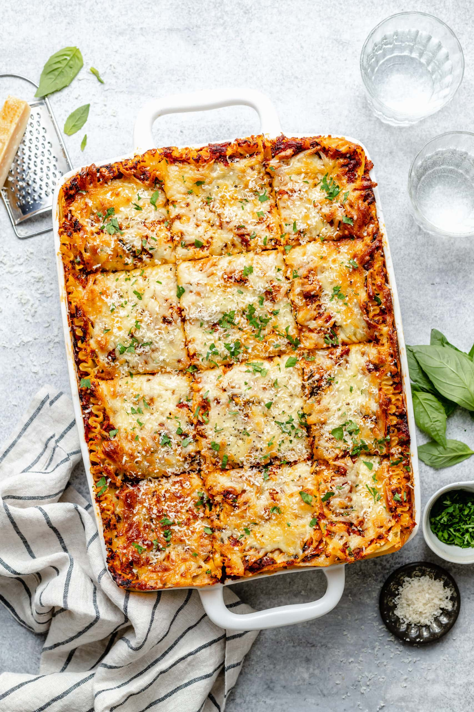

Lasagna Recipe

Recipe Description
Today, we are going to learn how to make an italian signature dish! Lasagna!
Lasagna is a creamy, savory pasta dish filled with meat and cheese. It is a perfect blend of southern and northern Italian cuisine and today we will be showing you how to do it step by step!
Ingredients
- Cheese
- Pasta
- Ground Meat
- Salt & Pepper
- Tomato Sauce
Steps
- Take out baking sheet
- Place Pasta
- Place Sauce
- Place Cheese
- Repeat 3 times, or till baking sheet is filled to the brink
- Pre-heat oven to 350 degrees
- Pop in Lasagna for 35 minutes
- Enjoy!
Back To Main Page